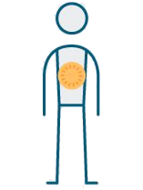
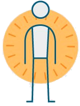

Мама , я сгорел
Синдром эмоционального выгорания (англ. burnout) проявляется нарастающим безразличием к своим обязанностям и происходящему на работе, дегуманизацией в форме негативизма по отношению как к клиентам (пациентам), так и к коллегам (сотрудникам), ощущением собственной профессиональной несостоятельности, неудовлетворенности работой, в явлениях деперсонализации, а в конечном итоге в резком ухудшении качества жизни. В дальнейшем могут развиваться невротические расстройства и психосоматические заболевания.
Burnout
vs
Boreout
Стадии выгорания
Хронический стресс
Депрессия
Смерть
1. Почему ?
2. Симптомы
| Периорбитальные отечности | 5 |
| Инсомния | 10 |
| Частые болезни | 14 |
| Brain fog | 22 |
| Избегание решений | 18 |
| Рабочая ангедония | 33 |
| Цинизм и скепсис | 100000 |
4. Что делать ?
Осознать
Джулиан Роттер
Локус контроля

Внутренний

Внешний